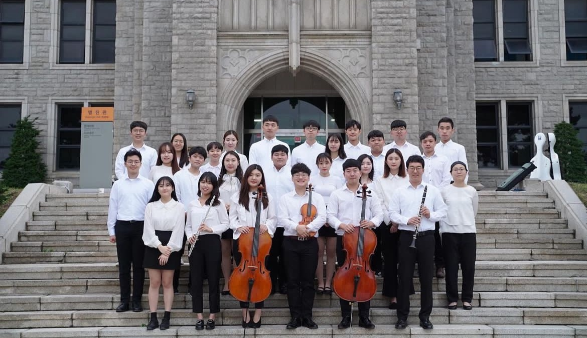

“함께 연주하며 만들어가는 하모니를 통해 깊은 감동을 주는 오케스트라 동아리"
동국대학교 오케스트라 OPUS는 2002년에 설립된 교내 유일의 필하모닉 관현악 오케스트라 중앙동아리로,
다양한 악기를 연주하는 학생들이 모여 클래식 음악을 통해 협동심과 개인의 자질을 향상시키고 친목을 도모하고 있습니다.
매년 11월에 정기연주회를 개최하며,
3월부터 매주 월요일과 목요일에 합주를 진행하여 연주회를 준비합니다.
또한, 여름방학에는 향상음악회와 음악캠프를 통해 단원들의 악기 실력과 합주 능력을 향상시키고 있습니다.
OPUS는 전공에 상관없이 음악에 대한 열정과 관심이 있는 모든 학생들에게 열려 있으며,
함께 연주하며 만들어가는 하모니를 통해 깊은 감동을 선사하고자 합니다.


“함께 연주하며 만들어가는 하모니를 통해 깊은 감동을 주는 오케스트라 동아리"
동국대학교 오케스트라 OPUS는 2002년에 설립된 교내 유일의 필하모닉 관현악 오케스트라 중앙동아리로,
다양한 악기를 연주하는 학생들이 모여 클래식 음악을 통해 협동심과 개인의 자질을 향상시키고 친목을 도모하고 있습니다.
매년 11월에 정기연주회를 개최하며,
3월부터 매주 월요일과 목요일에 합주를 진행하여 연주회를 준비합니다.
또한, 여름방학에는 향상음악회와 음악캠프를 통해 단원들의 악기 실력과 합주 능력을 향상시키고 있습니다.
OPUS는 전공에 상관없이 음악에 대한 열정과 관심이 있는 모든 학생들에게 열려 있으며,
함께 연주하며 만들어가는 하모니를 통해 깊은 감동을 선사하고자 합니다.
2002 동국대학교 OPUS 창단
2020 제 19회 정기연주회
2020.11.20 소규모 실내악 연주회
2021 제 20회 정기연주회
2021.08.29 지휘 | 한상욱 악장 | 한가현 협연 | 정희정
2022 제 21회 정기연주회
2022.11.12 지휘 | 한상준 악장 | 한가현
2023 제 22회 정기연주회
2023.11.17 지휘 | 장예은 악장 | 조예나
2024 제 23회 정기연주회
2024.11.16 지휘 | 이현주 악장 | 성동하